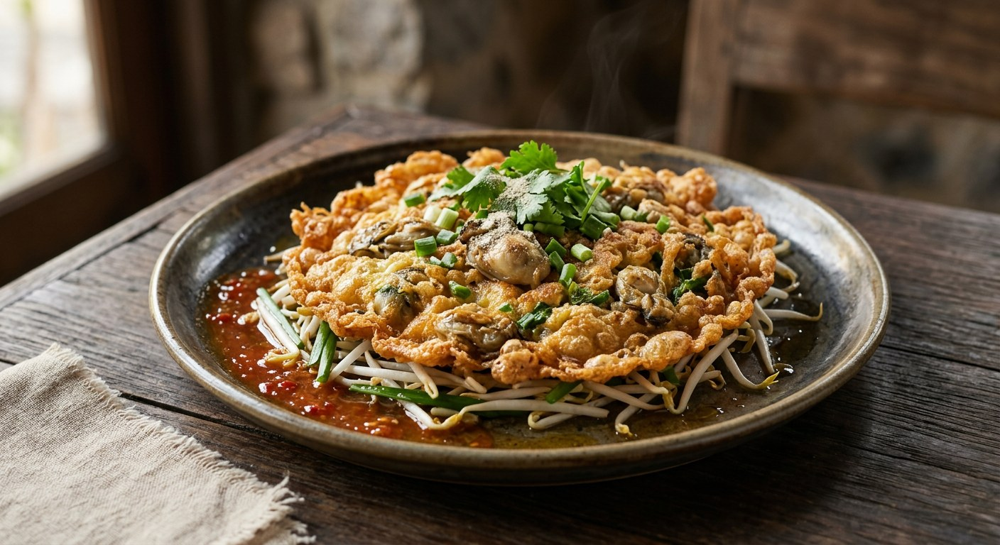

Mussels — or oysters — bound in a rice-flour and arrowroot batter, fried on a flat pan until it shatters, eggs smeared over the top, a tangle of beansprouts underneath and a sweet chilli dip on the side. The stall dish everyone waits for.

หอยทอด translates simply — หอย, shellfish, ทอด, fried. But ask any Thai source what makes it worth eating and the answer is the batter, not the shellfish: rice flour, arrowroot starch and crisp-fry flour mixed with ice-cold water and, in the home recipes, a spoon of น้ำปูนใส (limewater) — the trick that keeps the crisp going long after the pan is off the flame.
Wongnai's editors draw the street-food dividing line neatly: หอยทอด is made with mussels and a batter fried until properly crisp, while ออส่วน (o-suan) is the oyster version with a soft, springy batter — same stall, two textures. The Pantip cook บ่งบ๊ง adds the complaint every customer knows: at the stalls, the batter buries the shellfish — "แป้งกลบหอยจนมิด มองไม่เห็น" — you order a plate and need a net to find the two or three mussels. Her fix, the same fix in every home recipe: make it yourself and load the shellfish.
The rest is ritual. Eggs cracked over the half-set batter and smeared across it, the cake flipped with two spatulas and cut into shards, beansprouts flash-fried in the same pan — or left raw and buried under the hot omelette so they cook in its heat — and a dip that every street stall mixes from two bottles: น้ำจิ้มไก่ (sweet chicken dipping sauce) and ซอสพริก (sriracha).
| Thai | English | Amount |
|---|---|---|
| หอยแมลงภู่ | Mussels, cooked and shelled (or fresh oysters) | 1 cup |
| ไข่ไก่ | Eggs | 2 |
| แป้งทอดกรอบ | Crispy fry (tempura) flour | 4 tbsp |
| แป้งข้าวเจ้า | Rice flour | 2 tbsp |
| แป้งเท้ายายม่อม | Arrowroot starch | 3 tbsp |
| น้ำปูนใส | Limewater (keeps the crisp; optional) | 2 tbsp |
| น้ำเย็นจัด | Ice-cold water | 1/2 cup |
| ผงปรุงรส | Seasoning powder | 1 tsp |
| พริกไทยป่น | Ground white pepper | 1 tbsp |
| ซอสปรุงรส | Seasoning sauce (or light soy) | 1 tbsp |
| ถั่วงอก | Beansprouts | 1 cup |
| ต้นหอมซอย | Spring onion, sliced | 2 tbsp |
| น้ำมันพืช | Vegetable oil | 3 tbsp |
| น้ำจิ้มไก่ + ซอสพริก | Chicken dipping sauce + sriracha (the dip) | 4 tbsp + 2 tbsp |
The oyster pot — ออส่วน (Wongnai, TrueID): oysters in a soft batter of arrowroot (or tapioca) starch thinned with water and seasoned with light soy or oyster sauce and pepper; garlic fried first, eggs scrambled in, beansprouts stir-fried alongside. Wongnai's tip for doneness: the batter turns translucent when it is cooked. Pantip's second batter: rice flour and Knorr crisp-fry powder with ice-cold water and limewater — no arrowroot. Her dip, when there is time, is boiled: sriracha, sugar, salt, vinegar and water simmered together.
The starch. Kapook and Pantip build the crisp from three flours — tempura flour, rice flour and arrowroot — while Pantip's second batter drops the arrowroot for Knorr crisp-fry powder alone, and Wongnai's soft ออส่วน uses a single spoon of tapioca starch. TrueID's o-suan leads with arrowroot over rice flour. Same pan, four different batters: the crisp ones lean on rice flour and tempura flour, the soft ones on starch alone.
The limewater (น้ำปูนใส). Kapook and Pantip stir pickling-lime water into the batter and credit it with keeping the crisp long — Kapook adds that if you do not have it, simply leave it out. Wongnai and the TrueID o-suan recipes do not use it at all.
The shellfish. Mussels for หอยทอด, oysters for ออส่วน, is the rule in Wongnai and TrueID — but Pantip fries both in the same batter, and notes dried mussels soaked in water plump back to nearly fresh. Her verdict on the stalls stands: make it at home if you want to actually taste the shellfish.
The beansprouts. Kapook and Wongnai stir-fry the sprouts quickly with a little soy. Pantip gives the choice: stir-fried, or raw on the plate with the hot omelette set on top to cook them gently — the version, she says, for people who like their sprouts barely done.
The dip. Everyone starts from the same two bottles — chicken dipping sauce and sriracha — but the ratio moves: Kapook goes four to two in favour of the sweet sauce, Pantip two to one, TrueID equal parts. Pantip alone adds the made-from-scratch version, boiled sriracha with sugar, salt, vinegar and water, and the old-style alternative of sliced chillies pickled in vinegar.
This recipe is translated from the following Thai-language sources. Where they disagree, we've said so.
1. Kapook Cooking — "หอยทอด สูตรแป้งกรอบ" by tukata001 (the batter and method used here) — cooking.kapook.com
2. Pantip — "หอยทอดแป้งกรอบ - 2 สูตรอร่อยเหาะ" by บ่งบ๊ง, topic 30652509 (the two-batter recipe, the boiled dip, the shellfish-skimming complaint) — pantip.com
3. TrueID Food — "8 สูตรหอยทอด ออส่วน ทะเลทอด" (the stall-selling compilation of batters and dips) — food.trueid.net
4. Wongnai — "ออส่วน สูตรนิ่ม เมนูหอยชวนฟิน" (the soft oyster version; the hoi tod vs o-suan distinction) — wongnai.com
5. TrueID Food — "แจกสูตร ออส่วนหอยนางรม พร้อมน้ำจิ้มรสเด็ด" by nnanthisin (the arrowroot-led oyster batter) — food.trueid.net